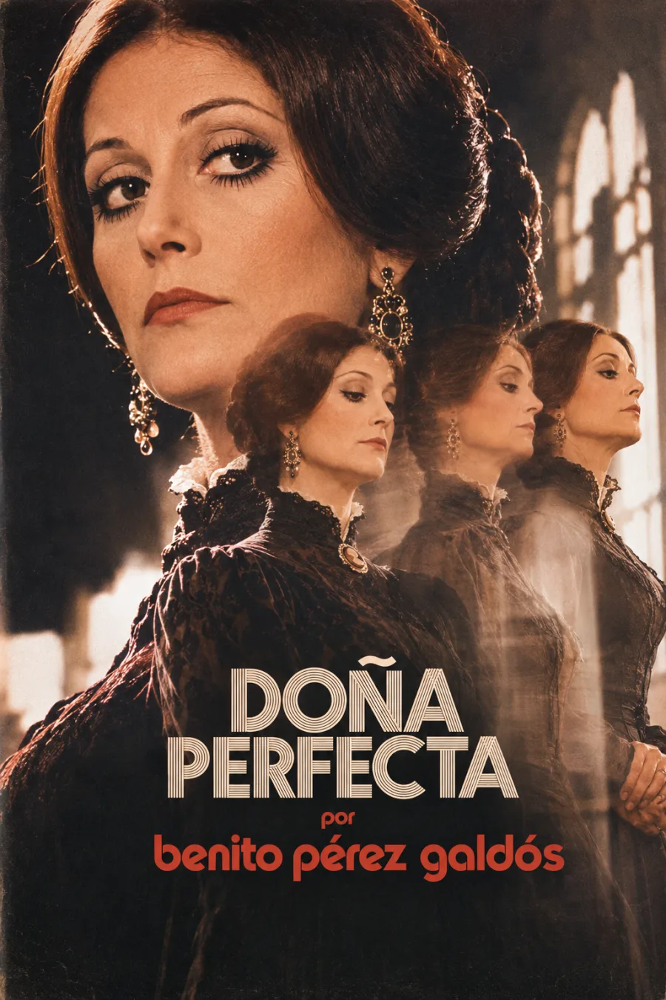

Audiolibros · Tercera Ola
Doña
Perfecta
Benito Pérez Galdós · Publicada en 1876
La virtud también puede ser una máscara.
Una casa recibe al forastero.
Una ciudad juzga sus palabras.
La cortesía se convierte en cerco.
La discordia detrás de las formas.
Volumen

La hospitalidad y el cerco
Pepe Rey llega a Orbajosa para conocer a Rosario, su prima y futura esposa. La acogida de doña Perfecta parece asegurar una unión familiar; sin embargo, las conversaciones con don Inocencio y las reacciones del pueblo convierten cada diferencia en una prueba contra el recién llegado.
El conflicto no entra por la fuerza: empieza en la sobremesa, en la insinuación y en el nombre que se da al otro.
Galdós hace crecer la desavenencia hasta volverla discordia y guerra. El afecto familiar, el prestigio religioso y los intereses particulares se entrelazan en una red de poder. La ironía obliga a mirar la distancia entre las palabras respetables y los actos que pretenden justificar.
Publicada en 1876. Ficha de la edición original y texto e índice, Biblioteca Virtual Miguel de Cervantes. Orbajosa es una ciudad ficticia; el salón superior es una interpretación artística, no una localización documentada.
La lectura
Los 33 capítulos de la novela, conservados en su orden original. Desplaza la lista para recorrerlos. Grabaciones pendientes de incorporación.
Capítulo I
Capítulo II
Capítulo III
Capítulo IV
Capítulo V
Capítulo VI
Capítulo VII
Capítulo VIII
Capítulo IX
Capítulo X
Capítulo XI
Capítulo XII
Capítulo XIII
Capítulo XIV
Capítulo XV
Capítulo XVI
Capítulo XVII
Capítulo XVIII
Capítulo XIX
Capítulo XX
Capítulo XXI
Capítulo XXII
Capítulo XXIII
Capítulo XXIV
Capítulo XXV
Capítulo XXVI
Capítulo XXVII
Capítulo XXVIII
Capítulo XXIX
Capítulo XXX
Capítulo XXXI
Capítulo XXXII
Capítulo XXXIII
Reseñas

Bueno